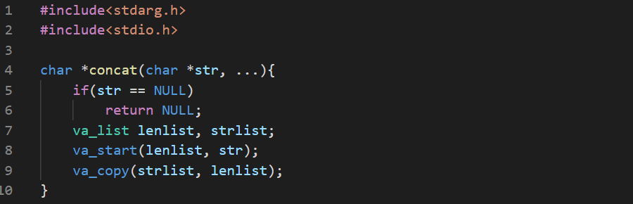

Let's make a function that concatenates all the given strings together.
The function must be invoked with atleast a char * pointer and must have a NULL pointer at the end.
- We have to declare and initialize two variables. One for counting the length of the final string and another one for concatenating.

We use va_copy to copy the content of one va_list to another.
Then we use a loop to measure the length.

Then we allocate the memory required and add each string at the end of another string.

Then we write a main function and test our function.